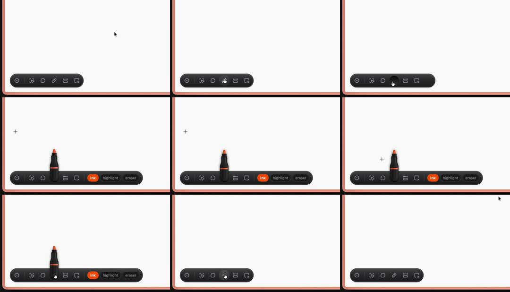

A highlighter marker: a whiteboard canvas with a floating dark pill toolbar of tool icons; picking the pen tool fans the toolbar open into a labeled segment control ('ink', 'highlight', 'eraser') and a 3D marker pen stands upright on top of the pill, tip up; switching tools swaps the pen (marker/highlighter/eraser) with a small pop; canvas framed by a peach border.
Media
Frame-by-frame

0-20%
Collapsed toolbar: dark rounded pill with 6 tool icons, bottom-left of canvas.
20-40%
Pen icon clicked: pill expands - the pen segment splits into three labeled chips 'ink' (orange active), 'highlight', 'eraser'; a 3D black marker with orange band and tip springs up standing on the pill.
40-60%
Hover slides across ink/highlight/eraser chips; marker wobbles slightly with selection.
60-100%
Toolbar collapses back to icon row; then expands again; a '+' crosshair appears on canvas where strokes would start.
Build prompt
Rebuild this interaction 1:1: a highlighter-marker toolbar - a whiteboard canvas with a floating dark pill toolbar of tool icons; picking the pen tool fans the pill open into a labeled segment control ("ink", "highlight", "eraser") while a 3D marker pen springs up standing on top of the pill, tip up; switching tools swaps the pen model with a small pop. Canvas framed by a peach border.
## Stack
React + TypeScript + Tailwind + Framer Motion. Marker as a small 3D render/image sequence (or CSS-built pen); pill width animated; chip labels revealed with layout animation.
## Scene
Canvas with a peach border frame. Bottom-left: dark rounded pill with 6 tool icons. Expanded: the pen segment splits into three labeled chips - "ink" (orange active), "highlight", "eraser". A 3D black marker with orange band and tip stands upright on the pill. A "+" crosshair appears on the canvas where strokes would start.
## Motion spec
Pattern: expanding control + character prop.
- Expand: pill width animates open (350ms ease-out); chip labels reveal with layout animation; the marker springs up standing on the pill (500ms, spring overshoot - scale 0 -> 1.1 -> 1 with a slight rotate).
- Hover across chips: active label highlights; the marker wobbles slightly (rotate +-3deg) with selection; switching chips swaps the pen model (marker/highlighter/eraser) with a 150ms pop.
- Collapse: pill returns to the icon row (300ms); marker pops down.
## Calibration
- Marker entrance is the personality: spring overshoot, ~500ms, one wobble at rest.
- Pill expand 350ms ease-out; labels appear WITH the width (layout animation), not after.
- Chip hover feedback is immediate (no delayed tooltips).
## Reduced motion
Pill expands with a 200ms fade; marker appears without spring; swaps without pop.
## Don't miss
- The marker stands ON the pill (anchored, shadowed), not floating near it.
- "ink" ships as the orange active default - the orange band on the marker matches.
- The canvas crosshair appears only when a tool is active.
Mechanics
trigger
tool icon click / chip hover
elements
dark pill toolbar, labeled segment chips, 3D marker model, canvas crosshair